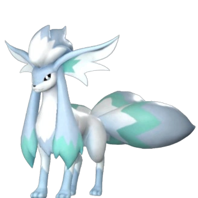
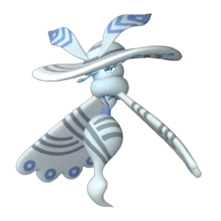
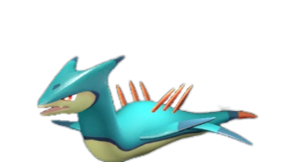
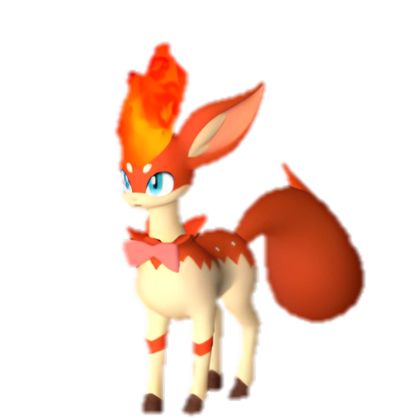
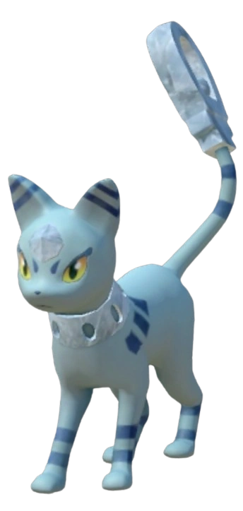
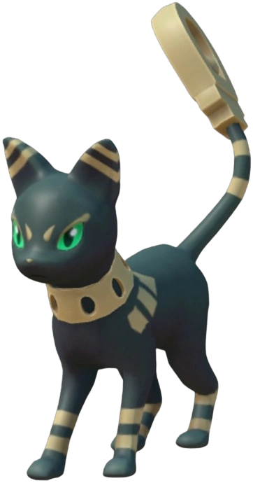
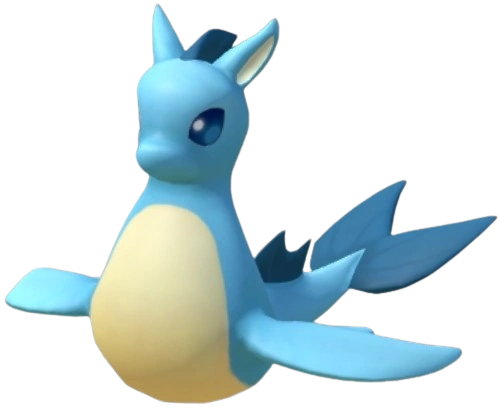
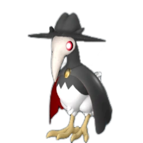
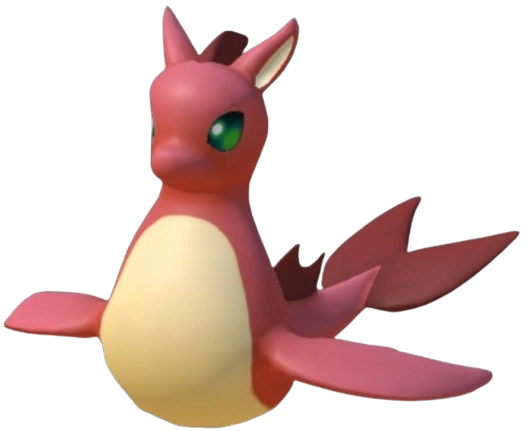

🐄 Best Farming Pals in Palworld (1.0 Rankings)
Looking for the best Pals to produce resources at the ranch? Palworld 1.0 reworked the entire work suitability system — level caps went up and many Pals got new values, so most pre-1.0 tier lists are outdated. This ranking is generated from extracted 1.0 game data and covers all 29 Pals with farming suitability.
Quick picks
- Best overall: Dumud Gild — Farming Lv4 (breed-only)
- Best wild-catchable: Beegarde — Farming Lv3
- Best early game: Cremis (#8) — Farming Lv2, low Paldeck number so you can catch it early
Full ranking — all 29 farming Pals
| # | Pal | Farming | Element | Other work | How to get |
|---|---|---|---|---|---|
| 1 | Lv4 | Ground/Water | Watering 2, Mining 2, Transporting 1 | 🥚 Breed only | |
| 2 | Lv4 | Neutral | Medicine Production 3 | 🥚 Breed only | |
| 3 | Lv3 | Grass | Gathering 3, Planting 2, Handiwork 2, Lumbering 2, Medicine | ✅ Wild | |
| 4 |  Foxcicle #95 | Lv3 | Ice | Cooling 4 | ✅ Wild |
| 5 |  Sibelyx #116 | Lv3 | Ice | Medicine Production 3, Cooling 3 | ✅ Wild |
| 6 | Lv3 | Grass | Planting 3, Gathering 3, Handiwork 2, Lumbering 2 | ✅ Wild | |
| 7 | Lv2 | Neutral | Gathering 1 | ✅ Wild | |
| 8 | Lv2 | Neutral | — | ✅ Wild | |
| 9 | Lv2 | Neutral | — | ✅ Wild | |
| 10 | Lv2 | Grass | Planting 3, Handiwork 3, Gathering 3, Medicine Production 3, | ✅ Wild | |
| 11 |  Surfent #75 | Lv2 | Water | Watering 3 | ✅ Wild |
| 12 | Lv2 | Dark/Fire | Kindling 3, Handiwork 3, Mining 3, Gathering 2 | ✅ Wild | |
| 13 | Lv1 | Neutral | Handiwork 1, Transporting 1 | ✅ Wild | |
| 14 | Lv1 | Neutral | Gathering 1 | ✅ Wild | |
| 15 | Lv1 | Neutral | Gathering 1 | ✅ Wild | |
| 16 | Lv1 | Dark | Handiwork 1, Mining 1, Transporting 1 | ✅ Wild | |
| 17 | Lv1 | Fire | Kindling 1, Handiwork 1, Transporting 1 | ✅ Wild | |
| 18 |  Rooby #26 | Lv1 | Fire | Kindling 1 | ✅ Wild |
| 19 |  Mau Cryst #26 | Lv1 | Ice | Cooling 1 | ✅ Wild |
| 20 |  Mau #27 | Lv1 | Dark | Gathering 1 | ✅ Wild |
| 21 | Lv1 | Grass | Planting 2 | ✅ Wild | |
| 22 | Caprity Noct #34 | Lv1 | Dark | Planting 2 | 🥚 Breed only |
| 23 | Lv1 | Neutral | — | ✅ Wild | |
| 24 | Woolipop Terra #39 | Lv1 | Ground | — | 🥚 Breed only |
| 25 | Lv1 | Electric | Electricity Generation 1, Handiwork 1, Transporting 1 | ✅ Wild | |
| 26 |  Kelpsea #43 | Lv1 | Water | Watering 1 | ✅ Wild |
| 27 |  Cawgnito #57 | Lv1 | Dark | Lumbering 2 | ✅ Wild |
| 28 |  Kelpsea Ignis #85 | Lv1 | Fire | Kindling 1 | ✅ Wild |
| 29 | Lv1 | Ground/Water | Watering 2, Mining 2, Transporting 1 | ✅ Wild |
🥚 Breed-only Pal? Use the PalTool reverse breeding calculator to find the shortest breeding path from Pals you can catch in the wild.
Work rankings: ⛏️ Mining · 🔥 Kindling · 🔨 Handiwork · 🪓 Lumbering · 📦 Transporting · 🌱 Planting · 💧 Watering · 🧺 Gathering · ⚡ Electricity Generation · 💊 Medicine Production · ❄️ Cooling · 🐄 Farming
Pals by element: 🔥 Fire · 💧 Water · 🌿 Grass · ⚡ Electric · ❄️ Ice · 🪨 Ground · 🌑 Dark · 🐉 Dragon · ⚪ Neutral
Data sourced from Palworld 1.0 game files. Last updated: July 2026.